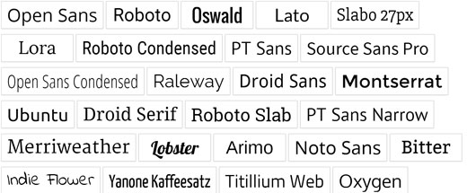
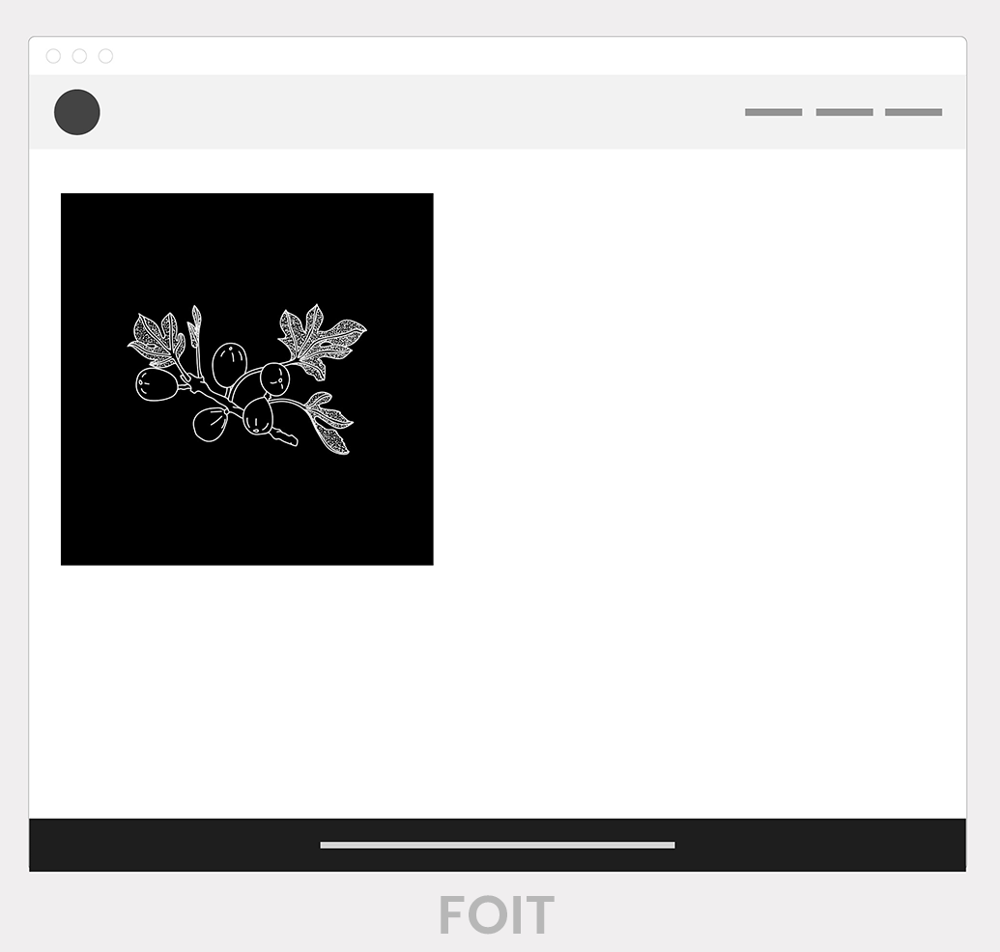
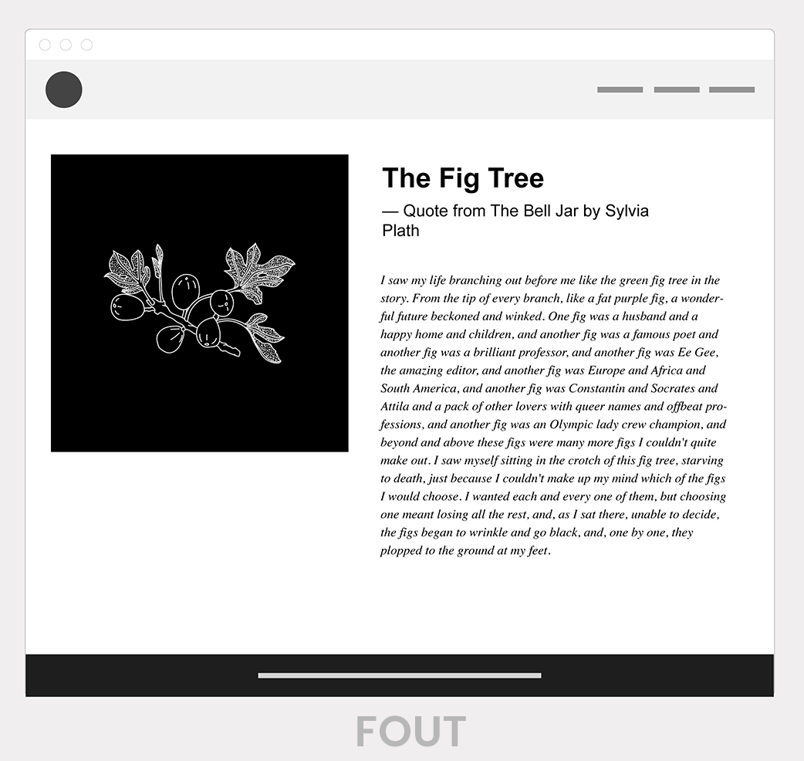
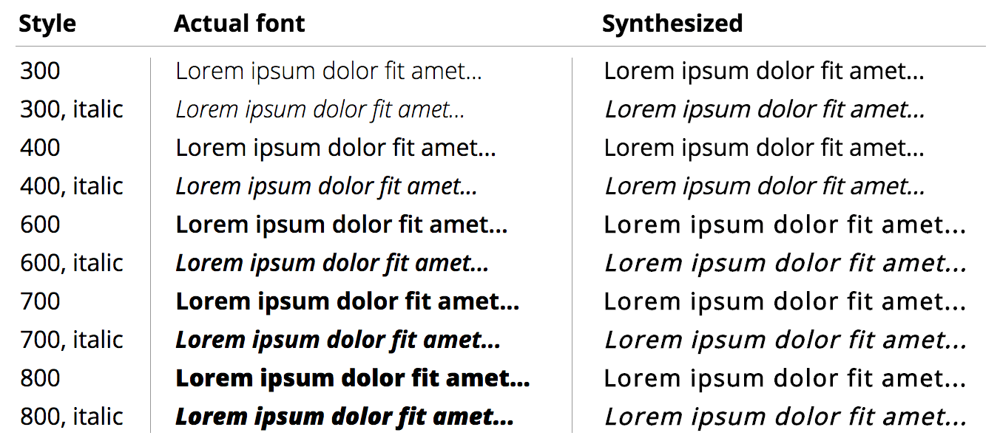
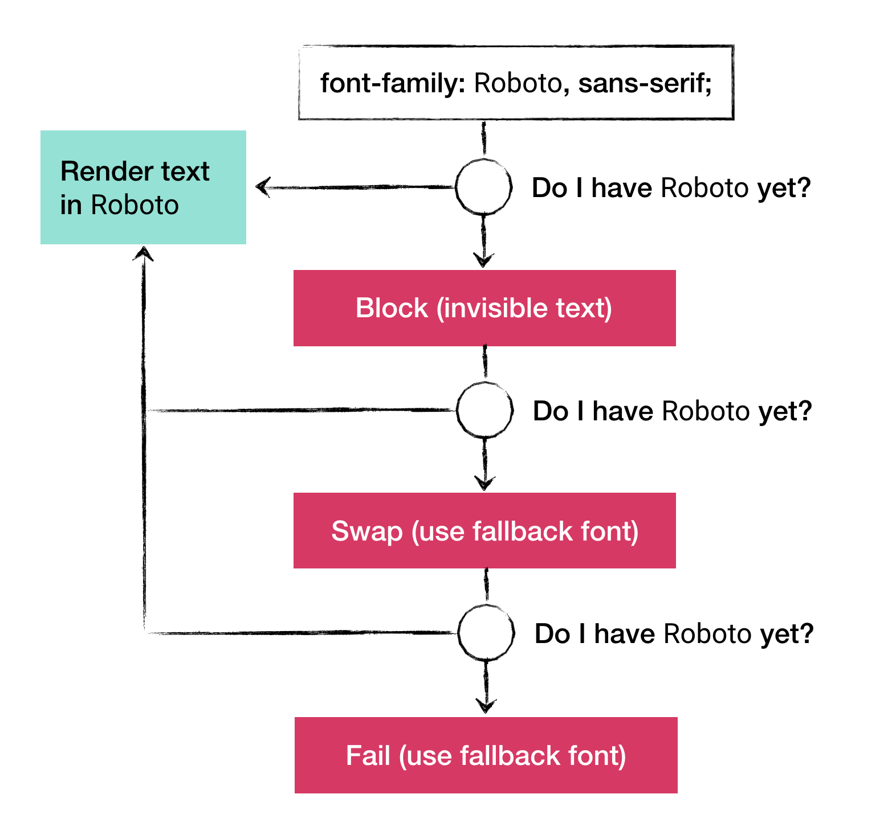
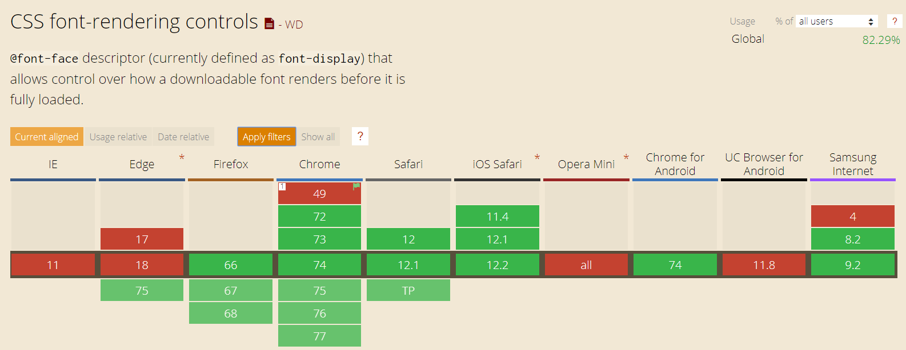

Fonts loading strategies
Terms
System fonts
Fonts available locally on an operating system without making any network requests.
FOIT
Flash of Invisible Text
FOUT
Flash of Unstyled Text
demo: FOIT and FOUT comparison
FOIT vs. FOUT ?
demo: FOIT and FOUT comparisonFOFT
Flash of Faux Text
Strategies
Just use system fonts ü§î
instead of the custom fonts
font-family:
-apple-system, BlinkMacSystemFont, Segoe UI,
Roboto, Oxygen, Ubuntu, Cantarell, Fira Sans,
Droid Sans, Helvetica Neue, sans-serif;
Just use system fonts ü§î

System fonts: pros and cons
üëç Super simple: just use font-family without @font-face.
üëç Perfect rendering performance: no worries about FOUT/FOIT.
üëé Limited availability. Very few system fonts are available cross platform.
Unceremonious @font-face
Just add a CSS @font-face block with WOFF and WOFF2 formats
@font-face {
font-family: FontName;
src: url('fontname.woff2') format('woff2'),
url('fontname.woff') format('woff');
}
Unceremonious @font-face: pros and cons
üëç Good rendering performance in IE and Edge: no FOIT
üëé Bad rendering performance everywhere else: maximum 3 second FOIT in most modern browsers (and switches to FOUT if load takes longer)
font-display
font-display currently supports the following range of values:auto | block | swap | fallback | optional
Add font-display: swap to switch to FOUT on browsers that support it:
@font-face {
font-family: FontName;
/* Define how the browser behaves during download: */
font-display: swap;
src: url(FontName.woff2) format('woff2');
}
font-display

font-display

Good news: Google Fonts
added font-display üéâ
Since May 2019 you can use font-display: swap with Google Fonts:
<link
href="https://fonts.googleapis.com/css?family=Roboto&display=swap"
rel="stylesheet">
* note that URL parameter is named display
font-display

font-display: pros and cons
üëç very simple and gives us FOUT without any JavaScript
üëç future friendly
üëé still not very good browser support
Optimal solution üëå
- 1
- 2